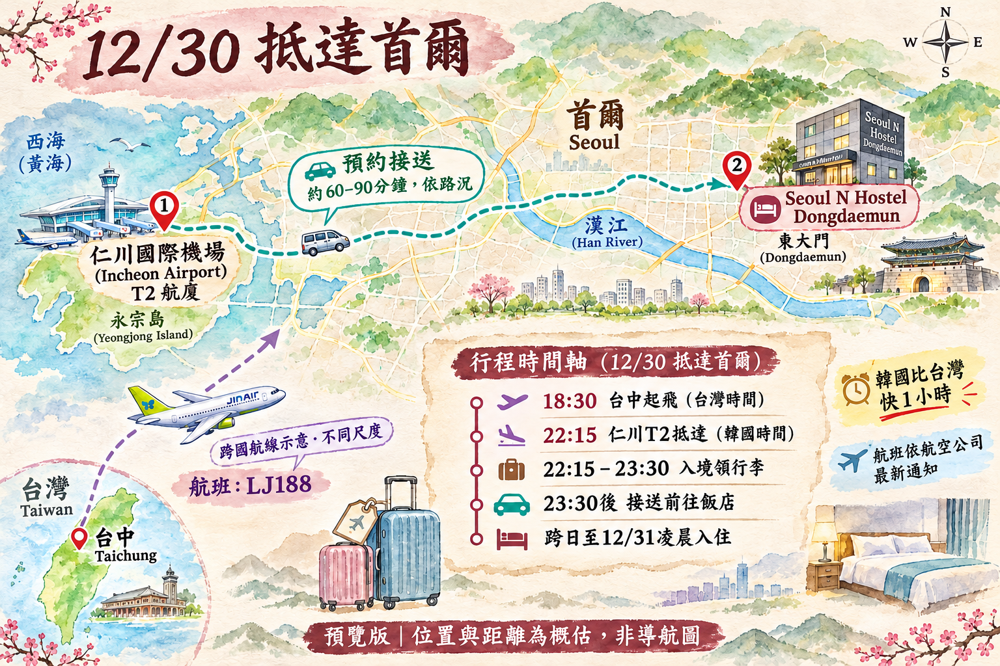
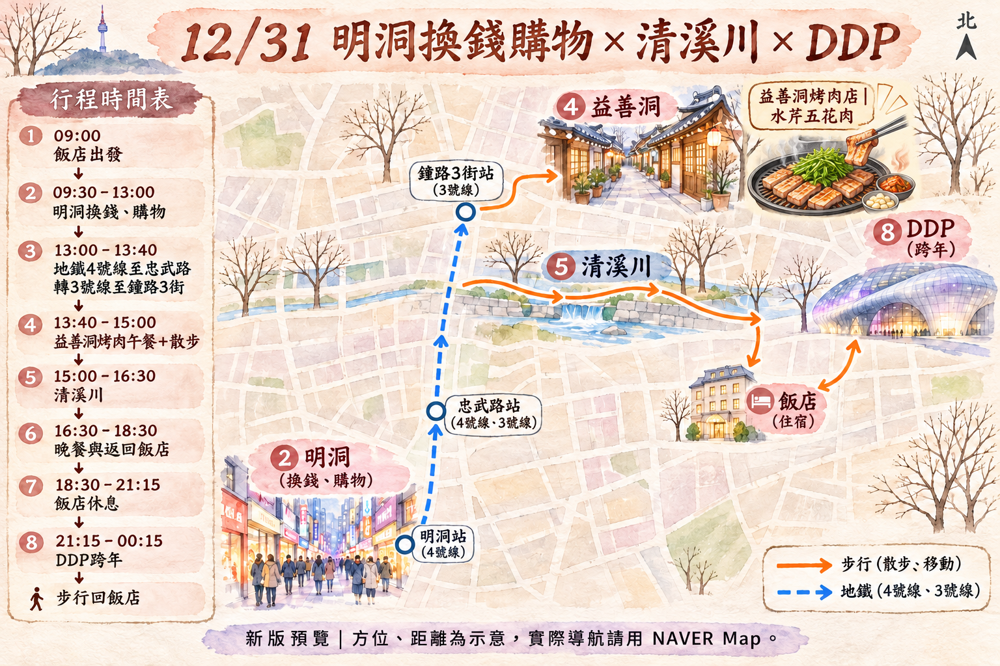
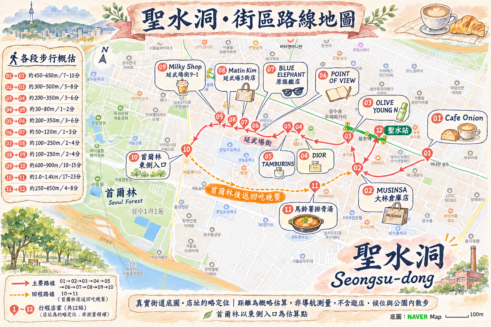
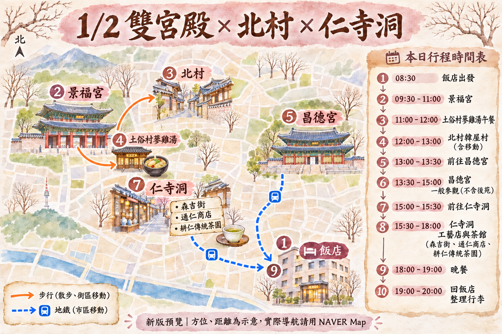
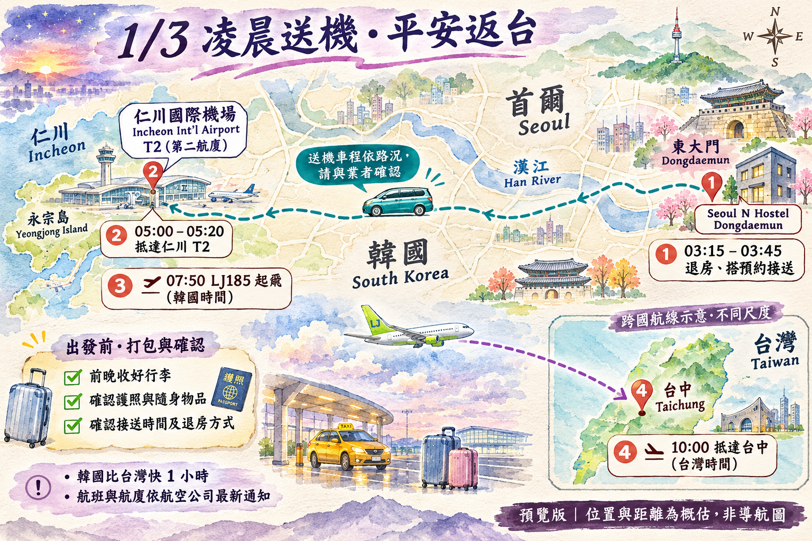

旅行日期2026.12.30 — 2027.01.03
住宿據點Seoul N Hostel Dongdaemun
東大門歷史文化公園站周邊
跨年之夜DDP 東大門設計廣場
12/31 → 1/1
每日行程 Daily itinerary
點選日期切換，景點可直接開啟 NAVER Map
DAY 01 · 12/30Hello, Seoul!
深夜抵達・機場接送・入住休息
手繪路線圖點此收合／展開

手繪示意・點位及距離為概估，請搭配下方各站 NAVER Map 使用。
23:30–01:30
前往飯店並入住
預約四人機場接送，直接抵達 Seoul N Hostel Dongdaemun。
🚇 車程預估 60–90 分鐘，依入境及路況調整
在 NAVER Map 查看 ↗💡 旅行提醒：務必事先向旅宿確認 12/31 凌晨仍可入住，以及自助入住密碼／方式。
DAY 02 · 12/31A Night to Remember
明洞換錢購物・益善洞・清溪川・DDP 倒數
手繪路線圖點此收合／展開

手繪示意・點位及距離為概估，請搭配下方各站 NAVER Map 使用。
09:00–09:30
前往明洞
早餐後從東大門歷史文化公園站搭4號線至明洞站，步行前往換錢所。
🚇 4號線直達＋步行
NAVER Map ↗09:30–13:00
明洞換錢與購物
先換錢，再逛美妝、服飾與伴手禮；換錢所依現場營業與匯率選擇，帶護照供核對。午餐留給13:40的益善洞烤肉；若餓了可先吃小點心。
🚇 換錢＋購物
NAVER Map ↗13:00–13:40
前往益善洞
明洞站搭4號線至忠武路，轉3號線至鐘路3街站，再步行進入益善洞。
🚇 4號線 → 忠武路轉3號線
NAVER Map ↗13:40–15:00
益善洞烤肉午餐與韓屋街
這一站附近吃什麼？
12/31 · 益善洞
益善洞烤肉店
익선동고기집
實際地點
益善洞韓屋街區，鐘路3街站周邊。
怎麼放進行程
適合四人分食的午餐主選。安排13:40–15:00用餐與短程散步；候位過久時壓縮喝咖啡時間，清溪川仍保留。
先在益善洞烤肉店吃水芹五花肉、烤豬肉，再逛韓屋巷弄。清水堂視候位與食量加選，不影響後續清溪川散步。
🚇 步行散步、咖啡休息
NAVER Map ↗這一站附近吃什麼？
12/31 · 益善洞
清水堂 Cheongsudang
청수당 익선
實際地點
서울 종로구 돈화문로11나길 31-9（益善洞店）
怎麼放進行程
竹林、水景與改造韓屋是特色，適合飯後休息；是甜點站，不當作午餐。
15:00–16:30
清溪川散步
從益善洞向南步行至清溪川，選一段河岸慢慢走。此時段包含前往河岸的移動；冬天冷可縮短河岸停留。
🚇 步行前往＋河岸散步
NAVER Map ↗16:30–18:30
晚餐、返回飯店
可選東大門一隻雞作晚餐，需計入前往餐廳、候位及返回飯店的時間；若排隊太久，改在回程沿途用餐。
🚇 步行／地鐵／短程計程車
NAVER Map ↗這一站附近吃什麼？
12/31 · 清溪川東段／東大門／DDP
陳玉華奶奶元祖一隻雞
진옥화할매원조닭한마리
實際地點
서울 종로구 종로40가길 18（一隻雞街，東大門市場側）
怎麼放進行程
適合把原本鐘路晚餐改到東大門吃，之後回飯店休息再去 DDP。不是 DDP 館內或飯店樓下，需另留交通與候位時間；不安排在跨年後。
21:15–00:15
DDP 跨年倒數
步行前往DDP；正式節目、開放區域及人潮管制以官方公告為準。
🚇 飯店步行往返
NAVER Map ↗💡 明洞先換錢購物，清溪川保留；晚間回飯店休息再前往DDP。
DAY 03 · 01/01Your Seongsu Shopping Day
廣藏市場・首爾林・聖水完整購物清單・首爾站超市
💡 餐食安排：10:00廣藏市場早餐／小吃 → 12:00 Cafe Onion 麵包與咖啡輕食午餐 → 18:30 馬鈴薯豬骨湯晚餐。Milky Shop 只作伴手禮採買。本行程由聖水站東側往西逛，最後首爾林再返回豬骨湯店，會有一段回程；首爾林落在天黑後。如要白天公園與完全不折返，需要再改店家先後。元旦營業、候位與交通以當日為準。
手繪路線圖點此收合／展開

手繪示意・點位及距離為概估，請搭配下方各站 NAVER Map 使用。
09:30–10:00
前往廣藏市場
從飯店步行或搭短程計程車。本行程為容納完整聖水清單，提早出發。
🚇 步行／計程車
NAVER Map ↗10:00–11:00
廣藏市場早餐與小吃
選母女紫菜飯捲與糯米麻花等小吃。本行程只留一小時，不含棉被比價與寄送；如要買棉被，需另延長市場時段。
🚇 早餐、散步
NAVER Map ↗11:00–12:00
前往聖水・Cafe Onion
從市場步行至乙支路4街站，搭2號線往往十里方向至聖水站，再步行到 Cafe Onion。把中午坐下吃東西安排在這裡。
🚇 2 號線 → 聖水站＋步行
NAVER Map ↗12:00–13:00
Cafe Onion 聖水店
서울 성동구 아차산로9길 8。中午在這裡坐下吃麵包、喝咖啡，作為輕食午餐。Onion 是麵包咖啡廳，不是熱食正餐店；依當日供應選鹹口麵包搭飲品，食量較大可在廣藏市場先多吃一些。座位需現場等候，不能把 Milky Shop 的伴手禮當作這餐。
🚇 午間輕食與休息；含候位緩衝
NAVER Map ↗官方介紹 ↗
13:00–13:50
MUSINSA 大林倉庫店
保留服飾與球鞋選物站；不再去大林倉庫咖啡廳用餐，將坐下休息時間留給 Cafe Onion。
🚇 步行到聖水二路一帶，服飾購物
NAVER Map ↗13:50–14:40
OLIVE YOUNG N 聖水
서울 성동구 연무장7길 13。集中採買已列好的美妝清單，保留明洞補買機會；本次不預排耗時體驗服務。
🚇 附近步行、美妝採買
NAVER Map ↗官方介紹 ↗
14:40–15:00
DIOR 聖水外觀
與 TAMBURINS 同一帶合併安排。只看外觀拍照，不含排隊進店或 Dior Café。
🚇 附近街區步行＋拍照
NAVER Map ↗15:00–16:00
TAMBURINS 試香與買香水
서울 성동구 연무장5길 8。這一站是購物重點：先試香、比較喜歡的味道，再挑尺寸與購買。預留約50分鐘；如排隊較長，優先壓縮其他品牌停留。
🚇 重點購物；試香與結帳
NAVER Map ↗16:30–17:00
BLUE ELEPHANT 聖水旗艦店
選延武場街13的原旗艦店試戴墨鏡，接著往 POINT OF VIEW。這次不另逛延武場街53的大型 SPACE 門市，避免同品牌重複逛。
🚇 步行、試戴墨鏡
NAVER Map ↗17:00–17:30
Matin Kim 聖水旗艦店
安排品牌官網列出的 서울 성동구 연무장3길 9 旗艦店，挑包款、服飾及配件，不使用較遠的峨嵯山路5街分店。
🚇 西側街區短程步行、購物
NAVER Map ↗官方介紹 ↗
17:30–17:50
Milky Shop 買伴手禮
挑焦糖奶油餅乾等當日販售品。詢問保存期限、保存溫度及包裝方式，確認是否適合 1/3 帶回台灣。近期資料有不同地址版本，出發前務必以店家最新定位確認；本版先按延武場街9-1舊有店點安排。
🚇 伴手禮採買；先確認最新店址
NAVER Map ↗17:50–18:30
首爾林傍晚散步
沿西側購物區往首爾林散步。本行程因 Onion 改到中午，首爾林會落在入夜後，只安排入口周邊短程散步，不是白天看景；若你希望白天逛首爾林，可另調整為購物前先逛公園。
🚇 公園散步；冬天依體感縮短
NAVER Map ↗18:30–19:45
馬鈴薯豬骨湯晚餐
保留 소문난성수감자탕，地址 서울 성동구 연무장길 45。從首爾林搭短程計程車或步行返回延武場街吃豬骨湯，預留移動及候位。這是熱食正餐，四人份量請店員協助。中午 Onion 輕食若不夠，下午購物時可自行加點現場小吃。
🚇 晚餐含候位緩衝
NAVER Map ↗19:45–20:45
前往首爾站
飯後步行回聖水站，搭 2 號線往往十里方向至東大門歷史文化公園，轉 4 號線至首爾站，再步行至超市。
🚇 2 號線 → 4 號線
NAVER Map ↗20:45–22:30
首爾站樂天超市採買
晚間集中買零食與伴手禮，預留約1小時50分鐘，含結帳。以目前一般營業至24:00安排，但1/1元旦營業及最後入店時間仍需向店家確認。若聖水逛街延誤，可彈性調整，避免拖到打烊才結帳。
🚇 採買與結帳；建議22:30左右離店
NAVER Map ↗22:30–23:15
返回東大門飯店
首爾站搭 4 號線至東大門歷史文化公園站，步行回飯店；時間為預估。若延後到更晚，請查當日末班車，或四人搭計程車返回，不預設地鐵通宵行駛。
🚇 4 號線直達
NAVER Map ↗DAY 04 · 01/02Timeless Seoul
景福宮・北村・昌德宮・仁寺洞
手繪路線圖點此收合／展開

手繪示意・點位及距離為概估，請搭配下方各站 NAVER Map 使用。
08:30–09:30
早餐、前往景福宮
飯店附近早餐後，搭5號線至鐘路3街轉3號線至景福宮站，預留站內步行時間。
🚇 5號線 → 3號線
NAVER Map ↗09:30–11:00
景福宮
參觀宮門、勤政殿與主要庭院，以重點路線為主，讓下午仍有體力逛昌德宮。
🚇 宮殿內步行
NAVER Map ↗11:00–12:00
土俗村蔘雞湯午餐
景福宮參觀後，先到西側土俗村吃蔘雞湯。這一小時含步行、候位與用餐，遇排隊需彈性調整。
🚶 景福宮西側步行前往
NAVER Map ↗這一站附近吃什麼？
1/2 · 景福宮
土俗村蔘雞湯
토속촌삼계탕
實際地點
서울 종로구 자하문로5길 5（景福宮西側）
怎麼放進行程
11:00離開景福宮後，先到西側土俗村用餐，再前往北村。時段包含移動、候位與用餐，現場若候位較久，需壓縮北村散步或仁寺洞停留。
12:00–13:00
北村韓屋村（含移動）
飯後從土俗村前往北村，可搭短程計程車減少步行。挑一段開放巷弄短程散步，遵守現場告示並降低音量；這段不再安排第二次午餐。
🚶／🚕 前往北村＋短程散步
NAVER Map ↗13:00–13:30
前往昌德宮
從北村沿街步行或搭短程計程車前往昌德宮正門敦化門；入口與步行時間以實際位置為準。
🚇 步行／短程計程車
NAVER Map ↗13:30–15:00
昌德宮一般參觀
欣賞敦化門、仁政殿與主要庭院。本次不含需另安排場次的後苑；門票、開放區域與冬季時間請出發前確認。
🚇 宮殿內步行；不含後苑
NAVER Map ↗15:30–18:00
仁寺洞工藝店與茶館
森吉街、通仁商店與耕仁美術館傳統茶園依興趣選逛。這天不再安排明洞，時間留給工藝、伴手禮與喝茶。
🚇 逛店、喝茶、休息
NAVER Map ↗精選去處｜工藝與傳統茶
推薦 01
森吉街 Ssamzigil
쌈지길
沿著緩坡逛工藝、陶器、飾品及設計小物，也能欣賞一路連到樓上的空間。想做手作，請另外確認工作室項目及預約。
📍 仁寺洞街 44
推薦 02
通仁商店
인사동 통인가게
適合欣賞陶器、韓紙、螺鈿漆器等韓國傳統工藝，並看看結合藝廊的展示空間。
📍 仁寺洞街 32
推薦 03
耕仁美術館傳統茶園
경인미술관 전통다원
逛街後坐下喝傳統茶，感受庭院與美術館的氣氛。冬天優先選室內座位；茶品與展覽依當日提供。
📍 NAVER 搜尋：경인미술관 전통다원
本次安排15:30–18:00逛店與喝茶；依體力選擇商店，晚餐另留18:00–19:00。
店家資料查詢：2026/11/18。營業時間、商品、座位與假日公休可能調整，請出發前查看 NAVER Map 與店家公告。
18:00–19:00
仁寺洞晚餐
可選五世界香吃蔬食，或依現場營業挑附近餐廳；午餐已吃過，不重複安排蔘雞湯。
🚇 晚餐
NAVER Map ↗這一站附近吃什麼？
1/2 · 仁寺洞
五世界香 Osegyehyang
오세계향
實際地點
서울 종로구 인사동12길 14-5
怎麼放進行程
仁寺洞晚餐選項；依現場菜單點餐。
1/2 · 仁寺洞
耕仁美術館傳統茶園
경인미술관 전통다원
實際地點
仁寺洞耕仁美術館庭院區；韓文店名可查入口。
怎麼放進行程
午餐後或逛工藝店後休息。與正餐分開看待，冬天優先選室內座位。
19:00–20:00
回飯店整理行李
由鐘路3街搭5號線返回東大門歷史文化公園，步行回飯店，整理行李並確認隔天凌晨接送。
🚇 5號線直達＋步行
NAVER Map ↗💡 兩座宮殿都保留，昌德宮不含後苑；本日明洞已移至12/31。
DAY 05 · 01/03Until Next Time
凌晨送機・仁川 T2・台中
手繪路線圖點此收合／展開

手繪示意・點位及距離為概估，請搭配下方各站 NAVER Map 使用。
💡 旅行提醒：機場接送需確認四人及行李數量。實際出發時間以航空公司報到規定與接送業者建議為準。
交通時間為預估，未含候車及人潮管制。地鐵出口、節慶開放時間、元旦市場營業與 DDP 最終節目請出發前再核對。所有景點地圖連結均使用 NAVER Map；台灣機場另以名稱搜尋。
行前準備清單 Packing checklist
勾選狀態會保存在目前裝置的瀏覽器，不會同步給其他同行者
韓國入境申報｜本次 12/30 抵達
若持台灣普通護照，依現行公告 K-ETA 暫時免申請至 2026/12/31；仍需確認每位同行者的個別資格。免申請 K-ETA 不等於免填入境卡。持有效 K-ETA、韓國居留證等免填資格者，通常不需申報入境卡。
e-Arrival Card 免費電子入境卡
建議 12/28–12/29 填寫，送出後有效 72 小時，務必涵蓋 12/30 實際抵達。備妥護照、Email、入境班機、住宿及離境資料。每人都要有自己的申報資料；同行可依官網流程一併辦理。成功提交後無須列印。
本次行程可參照的資料（請以實際訂單核對）
入境：2026/12/30，LJ188
離境：2027/1/3，LJ185
住宿：Seoul N Hostel Dongdaemun
地址：159-16 Mareunnae-ro, Jung-gu, Seoul
若表格要求住宿電話，請查訂房確認信，不要自行猜填。
海關申報依攜帶物品判斷；Q-Code 依出發前公布的檢疫條件判斷。資料核對日：2026/11/18，出發前請再次確認官方規定。
免費電子入境卡官方網站 ↗ · K-ETA 暫免公告 ↗ · 入境、海關與健康申報說明 ↗
個人護照及申報編號請只填入官方系統或保存在私人裝置，不要寫進共享行程網頁。